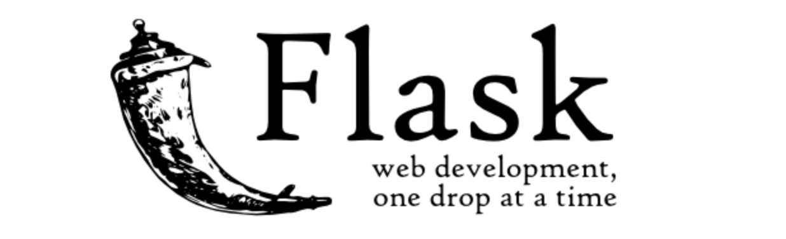

2 Python微型Web框架Flask快速入门¶

Flask是什么¶
如果说Django是一个开箱即用的自带完善功能的Web框架，那么Flask就是一个只提供基础结构的微型框架。这一点从它的GitHub源码就能看出端倪：

它的核心代码就只有这么多。微型意味着Flask本身只提供了简单的核心的功能，但它具备了强大的可扩展性。比如，它不会强制你使用某个ORM框架，而是把选择权交给你，让你自己决定集成哪个扩展。
无论如何，都应该学习一下Flask，因为它让你从零开始，了解一个Web框架是如何诞生的：

安装Flask¶
Flask需要Python3.6及以上才能使用，最新的async异步支持需要Python3.7及以上。
安装Flask前可以先创建一个虚拟环境，这样相关的包都放在这个虚拟环境中。
Mac用户：
## 创建
$ mkdir myproject
$ cd myproject
$ python3 -m venv venv
## 激活
$ . venv/bin/activate
Windows用户：
## 创建
> mkdir myproject
> cd myproject
> py -3 -m venv venv
## 激活
> venv\Scripts\activate
然后就通过pip安装Flask即可：
$ pip install Flask
Hello World¶
Flask是一个Web框架，更准备的说是一个提供接口的后端服务，只需要5行代码就能实现一个接口：
from flask import Flask
app = Flask(__name__)
@app.route("/")
def hello_world():
return "<p>Hello, World!</p>"
截止到目前，还没见过哪个Web框架是这么玩的，有点颠覆对Web框架的认知，印象中的Web框架都是有点庞大的，Flask却很轻巧的就实现了。
运行后会在控制台输出：
> set FLASK_APP=hello
> flask run
* Running on http://127.0.0.1:5000/
浏览器访问http://127.0.0.1:5000/就会看到Hello, World!字样。
代码解析¶
这几行代码会做这4件事：
from flask import Flask，Flask类的实例就是一个WSGI应用，这样才能跑起来。app = Flask(__name__)，参数__name__是模块或包名，这样Flask才能去查找Web相关文件。@app.route("/")，定义了接口的URL，也就是路由配置，默认是GET方法。hello_world()函数是具体的接口处理逻辑代码，返回了一个HTML字符串。
小结¶
本文简单介绍了Flask是什么，怎么安装Flask，演示了Hello World的代码实现Demo，并对代码进行了解析。为什么一定要学Flask呢？我最近看了一篇Django vs Flask的最新的比较文章，原文是国外某个博客发的，里面说道，如果你想在当前快速实现某个需求，那么可以选择使用Django。但是请你有时间务必回过头来学一下Flask，因为这样才能知道用Python做Web开发的所有细节。